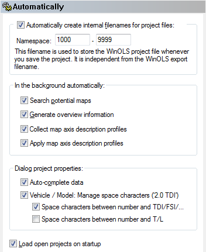
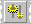

|
The dialog Configuration / Automatically (Menu Miscellaneous) |

  
|
|
The dialog Configuration / Automatically (Menu Miscellaneous) |
|

Namespaces:
The 'namespaces' feature is of interest to you, if you’re using WinOLS on multiple computers without using a central shared directory for all, e.g. because one of the computers is a notebook. In order to make the manual synchronisation easier, you may configure the way the files are named for each computer. Enter a from / to area to enumerate the filenames. These filenames may also contain letters.
Examples for correct namespaces are:
1000 - 9999
1000 - 1999
laptop1000 - laptop1999
1000pc - 9999pc
Background:
Parameters for automatic behaviour can be configured in this section.
Search potential... |
If activated, WinOLS will search the project for potential maps and display them (if this is activated in the 'View' page). Potential maps will be searched only once. If you save the project and reopen it, they will not be searched again. |
Generate overview... |
If activated, WinOLS will automatically generate the overview information, even if the overview window is not open. This is useful if you have the 'pale' data display activated (see 'View' page) |
Collect map... |
If activated, WinOLS will automatically generate for the different projects. These profiles store information about the way map axis descriptions are displayed (for example name, unit, factor, offset, ...). These profiles may be administrated in the drop-drop menu of the map selection window. |
Apply map... |
If activated, WinOLS will automatically try to find information to configure the map’s axis descriptions better than the default values would do. |
Data areas |
With the help of the free plugin OLS526 can auto-detect data areas. This improves the detection of similar projects. |
Dialog project properties:
Auto-complete... |
If activated, WinOLS will try to complete anything you type in the project properties dialog (and in the open project dialog if you’re using the inplace editing feature). For this WinOLS will use the data you entered in other projects and some predefined data. |
Manage space characters |
WinOLS can help you fill in the field "Vehicle / Model" in a consistent way. To achieve this, WinOLS (if you enable this option) corrects the space character between number (e.g. "2.0") and the following text (e.g. "TDI") according to your preferences. |
...TDI |
If this option is active WinOLS corrects "2.0TDI" to "2.0 TDI". If this option is inactive WinOLS corrects "2.0 TDI" to "2.0TDI". |
...other text |
If this option is active WinOLS corrects "2.0L" to "2.0 L". If this option is inactive WinOLS corrects "2.0 L" to "2.0L". |
More options:
Load projects... |
If activated, all projects with were opened when exiting WinOLS will be re-opened on the next start of WinOLS. |
Shortcuts
| Symbol bar: |  |
| Keyboard: | F12 |